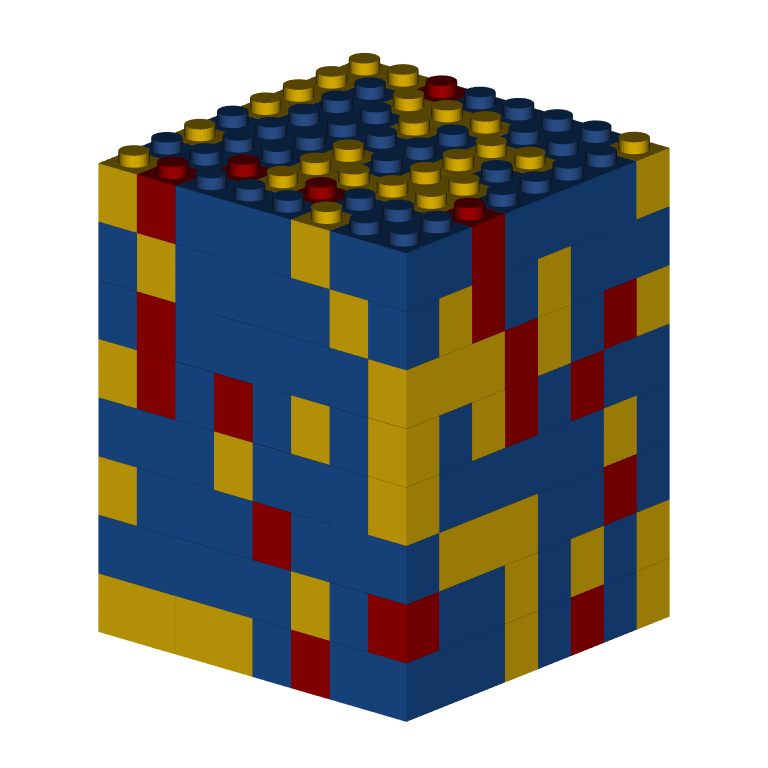
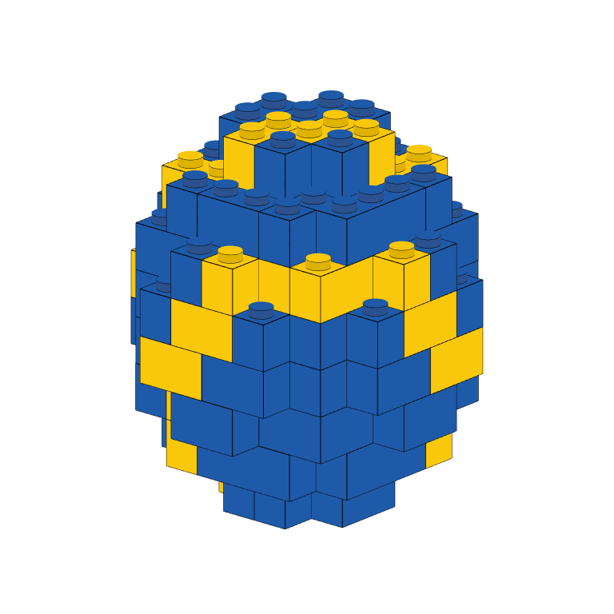
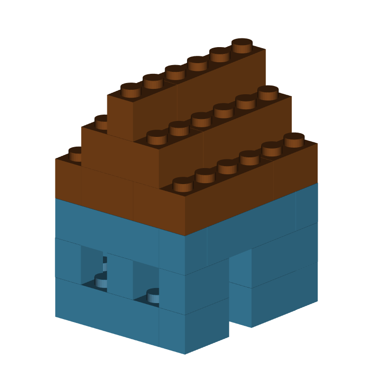
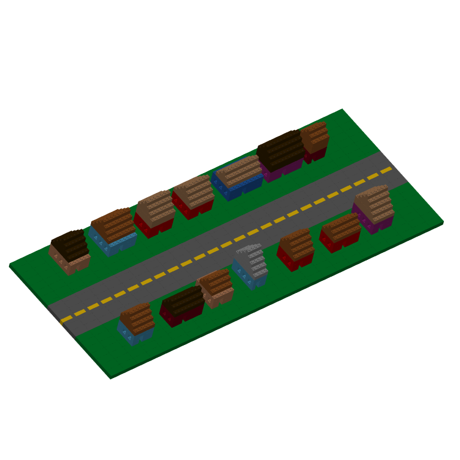

The bricks_from_* series of functions creates 3D models of LEGO bricks from a variety of input formats.
Use bricks_from_coords() to programmatically build 3D LEGO models rather than manually drawing them in a spreadsheet or table. Prove the function with a data frame with x, y, and z coordinates, along with an official LEGO color name for each point.
Below, we create a 8x8x8 cube by expanding a data frame with the array 1:8 as the x-, y-, and z-coordinates. We then assign each row of that data frame one of three colors: Bright blue, Bright yellow, or Bright red.
use_colors <- c("Bright blue", "Bright yellow", "Bright red")
cube <- expand.grid(
x = 1:8,
y = 1:8,
z = 1:8
)
cube$Color <- sample(use_colors, nrow(cube), replace = TRUE, prob = c(5, 3, 1))
cube %>%
bricks_from_coords() %>%
build_bricks()
rgl::par3d(userMatrix = rgl::rotate3d(rgl::par3d("userMatrix"), 1.1*pi/4, 0, 0 ,1))
Using the same logic, we can build a sphere with a specified radius, and then apply rules to color each brick based on its coordinates.
radius <- 4
sphere_coords <- expand.grid(
x = 1:round((radius*2.5)),
y = 1:round((radius*2.5)),
z = 1:round((radius/(6/5)*2.5)) #A brick is 6/5 taller than it is wide/deep
) %>%
dplyr::mutate(
#Distance of each coordinate from center
dist = (((x-mean(x))^2 + (y-mean(y))^2 + (z-mean(z))^2)^(1/2)),
Color = dplyr::case_when(
#Yellow stripes on the surface with a 2to4 thickness
dplyr::between(dist, (radius-1), radius) & (x+y+z) %% 6 %in% 0:1 ~ "Bright yellow",
#Otherwise, sphere is blue
dist <= radius ~ "Bright blue"
))
sphere_coords %>%
bricks_from_coords() %>%
build_bricks(rgl_lit = FALSE, outline_bricks = TRUE)
rgl::par3d(userMatrix = rgl::rotate3d(rgl::par3d("userMatrix"), 1.1*pi/4, 0, 0 ,1))
The option outline_bricks = TRUE adds a black outline around the edges of the bricks. Setting rgl_lit = FALSE turns off automated lighting effects from rgl. Changing these two inputs together renders bricks in a more cartoon fashion.
Rather than directly writing a data frame for a model, you can write a function that returns a data frame with x, y, z, and Color coordinates given initial starting parameters.
Below, the function brick_house() creates a LEGO house with randomized colors. The x- and y-coordinates and the size of the house are inputs to the functions.
brick_house <- function(x_coord = 0, y_coord = 0, width=6, length=5, height=7){
roof_colors <- c("Dark orange", "Dark brown", "Medium nougat", "Medium stone grey")
roof_col <- sample(roof_colors, 1)
house_colors <- c("Bright blue", "Bright red", "Dark red", "Dark azur", "Nougat", "Bright reddish violet")
house_col <- sample(house_colors, 1)
house_coords <- expand.grid(
x = 1:width, y = 1:length, z = (1:height)+1
) %>%
dplyr::mutate(
roof = (z > round((1/2)*height)),
Color = dplyr::case_when(
#Roof
roof & (abs(y - floor(length/2) -1) <= (height-z)) ~ roof_col,
roof ~ NA_character_,
#Door and windows
x == round(width/2) & y==1 & z <= 3 ~ NA_character_,
dplyr::between(x, 2, width-1) & x %% 2 == 0 & y > 1 & z == 3 ~ NA_character_,
dplyr::between(y, 2, length-1) & y %% 2 == 0 & z == 3 ~ NA_character_,
x %in% c(1, width) | y %in% c(1, length) ~ house_col),
x = x+x_coord,
y = y+y_coord
)
return(house_coords)
}
#Build one house
brick_house() %>%
bricks_from_coords() %>%
build_bricks()
rgl::par3d(userMatrix = rgl::rotate3d(rgl::par3d("userMatrix"), 1.1*pi/4, 0, 0 ,1))
Next, we write one more function, brick_street() to build a road and grass foundation. The, for an arbitrary number of houses and neighborhood size, use purrr::pmap_df to generate many houses and place them along the road.
brick_street <- function(width = 100, length = 40){
expand.grid(x=1:width, y=1:length, z=1) %>%
dplyr::mutate(
Color = dplyr::case_when(
y == round(length/2) & x %% 4 %in% 1:4 ~ "Bright yellow",
dplyr::between(y, length/2 -5, length/2 +5) ~ "Dark stone grey",
TRUE ~ "Dark green"
))
}
#Build a village, houses on 2 sides of a street
n_houses = 14
sz = c(100, 40)
list(x_coord = c(sample(seq(10, sz[1]-10, by = 12), n_houses/2),
sample(seq(10, sz[1]-10, by = 12), n_houses/2)),
y_coord = c(rep(sz[2]/2-15, n_houses/2), rep(sz[2]/2+10, n_houses/2)),
width = sample(4:10, n_houses, replace = TRUE),
length = sample(5:8, n_houses, replace = TRUE),
height = sample(7:9, n_houses, replace = TRUE)
) %>%
purrr::pmap_df(brick_house) %>%
dplyr::bind_rows(brick_street(sz[1], sz[2])) %>%
bricks_from_coords() %>%
build_bricks()
rgl::par3d(userMatrix = rgl::rotate3d(rgl::par3d("userMatrix"), 1.1*pi/4, pi/4, 0 ,1))